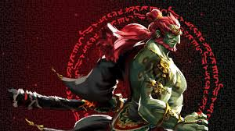
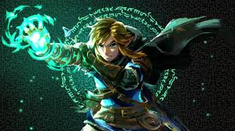

Ganondorf is the main villain of Tears of The Kingdom, through the game he tries to take control of
Hyrule. As the former leader of Gerudo town he sees himself in the position of king, so using a secret
stone he becomes the Demon King. He is fought below Hyrule castle in the depths. To get to him his army
must be destroyed along with the 6 bosses that you can either fight throughout the game or at the end.
The demon dragon is the final stage of the Ganondorf fight as he consumes his secret stone. By eating
this stone he used draconification, the practice of turning yourself into a dragon for pure power. As he
flies out of the castle bringing Link with him. The light dragon catches Link, and helps the protagonist
defeat Ganondorf. Ending the dragon by destroying the stone on his head and exploding the Demon Dragon
in a dramatic climax.
Colgera is one of five bosses that need to be fought before
Ganondorf, it is a ice snake/centipede made from pure malice.. It is fought in the Wind Temple also
called the Stormwind Ark in the eye of a huge storm very high in the sky. Colgera is fought with an ally
named Tulin. To get to this monster you must go to Rito village which is under a constant snow storm,
then team up with Tulin to fight monsters and get into the Ark. In the temple there are many puzzles,
and once they are down Colgera emerges. The beast can also be fought in the depths
Marbled Gohma is also one out of five bosses needed to fight Ganondorf, it is a crab like monster made from
from gloom. He is found in the Fire temple also known as the Lost City of Goronia under Death mountain,
a giant volcano. To get to Marbled Gohma you have to free an ally, Yunobo from mind control from
Ganondorf posing as Zelda. Then fight a boss before going into the Fire temple. Where you have to solve
puzzles dealing with fire and lava to fight the boss. Marbled Gohma is also found in the depths to fight
Ganondorf, or fight areanas
Mucktorok is one out of five bosses needed to fight Ganondorf, he is a octopus that transforms into a shark out
of sludge. He is fought in the Water Temple high in the sky with anti gravity. To get to him you must
find Prince Sidon and create a whirpool into a cave. There is a mechanism in the cave to release
a waterfall from the sky islands. After swiming up and getting to the top of the islands. You must complete
puzzles in the temple then fight Mucktorok with Sidon.
The Queen Gibdo is one out of five bosses needed to figh Ganondorf, she is a ant like monster that rules over the
gibdos, mummy like creatures. She is found in the Lightning Temple. To get there you need to fight off gibdo invasions
with the Gerudos. Then, you need to line up three pillars to rise the Lightning temple
out of the sand. Then solve the puzzles inside with Riju.
The Seized Construct is a robot built long ago that was corrupted by
Ganondorf. It is found in the Spirit Temple. To get there you need to go to the Great Plateu, then
drop four statues eyes into a chasm into the depths. Then the statue leads you to a construct factory, where a voice calls you to get four robot
parts. Mineru, an ally from long ago takes the spirit of the robot. Now to get her
secret stone it is in the Spirit Temple where the fight with the Seized Construct occurs.
Master Kohga is an enemy from the previous game, but throughout the depths. You can find Master Kohga in various places
where he uses different Zonai devices to compete with Link's skill. He is the leader of the Yiga clan
which is the enemy of the Sheika clan, who are allies of Link and all of Hyrule.
A Molduga is a monster that lives under the sand in Gerudo regions. There are two variants, the
normal Molduga and the King Molduga which has much more health and does more damage.
A Hinox is a giant cyclops always found sleeping in caves or wide open areas. They have weapons on a
necklace around their neck and often try to throw trees and rocks at Link. They come in multiple variants. The regular Hinox which is a
red one, the Blue Hinox which
is a little more powerful, and a black Hinox which is the most powerful. However there is also the Stalnox which is a skeleton version of the Hinox.
A Gleeok is a three headed dragon often found in big areas like Hyrule Bridge, Gleeok's den, and Tabantha Snowfield. There are
four variants of the Gleeok, the Flame Gleeok, Ice Gleeok, Thunder Gleeok, and King Gleeok. The King Gleeok has the powers of all other three Gleeoks and much more health.
The Flux Construct is a robot that is found almost everywhere, but on surface level. It is a robot that is made out of boxes
with energy connecting each one, it can also take many different shapes to attack Link. It
can be a level one, two, three, or four Flux Construct. And level four is golden.
Froxes are creatures found in the depths they have one eye and rocks on their backs. They are giant lizard looking creatures that
inhale almost anything. They come in many variants: a regular Frox, an Obsidian Frox, a Blue-White
Frox and a non boss little frox.
Talus' are giant rock made monsters that can only be hurt by hitting the rock on their backs. They throw their rock arms at Link and
can infinitly regrow them. They come in MANY variants such as Stone Talus, Frost Talus,
Igneo Talus, Luminous Talus, Rare Talus, and Battle Talus.
Gloom Hands are an enemy that can spawn anywhere, they are hands with eyes on them made from pure malice. After killing them
(Which is hard to do without bombs) it spawns Phantom Ganon. Which is a
Ganondorf manifestation made of darkness.
The Sludge Like is an enemy that needs to be fought before going to the Water Temple. It is a Like Like which is a common enemy
that is like a worm with giant teeth. The Sludge Like is a one
time enemy that needs to be fought with Sidon's water powers.
When Yunobo is met in this game at first he is under mind control of Ganondorf. So, in a cave there is a fight against Yunobo
to break is mask which was controlling him. Once the mask is broken he
becomes your teamate to fight with.
Morgia is a one time enemy fought outside Death Mountain. It is a massive rock monster with multiple heads stemmming out of the
volcano. Using a Zonai flying machine and Yunobo's fire power Morgia is
taken down. Then it allows you to go into Death Mountian.

Images from DeviantArt